Technical introduction to Robust methods in multivariate analysis
Notation
Classical multivariate methods of estimation are based on the assumption of an i.i.d. sample of observation Y={y1, y2, ..., yn} with each yi have a v-variate normal Nv(µ, Ʃ) with density f(y) given by
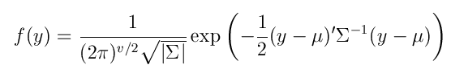
where Ʃ =var(y) and |Ʃ| stands for the determinant Ʃ. If y is multivariate normal for any constant vector a, all linear combinations a'y are normally distributed. In addition given that conditional expectation of a subgroup of coordinate with any other subgroup is a linear function of the latters, the type of dependence among variables is linear. Thus, methods based on multivariate normality only give information about linear relatioships among coordinates. As in the univariate case, the main reason for this assumption is simplicity.
If one dispersion matrix is a scalar multiple of another i.e. Ʃ2 = k Ʃ1 we say that they have the same shape but a different size. In what follows we denote with simbol 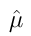the estimate of location, with symbol 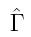the estimate of the shape matrix and with symbol 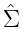 the estimate of the covariance matrix where 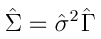.
As in the univariate case, one may consider the approach of outlier detection. We are concerned with the case where a certain proportion of the observations may not follow model above. The Mahalanobis distance (in squared units) between the vectors y and µ with respect to matrix Ʃ is defined as
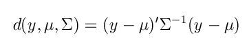
Remark: the code to implement the Mahalanobis distances from a given centroid and a scatter matrix (which are not necessarily the mean and the sample covariance matrix) is implemented in function mahalFS.
Affine equivariance
Let 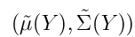 be the location and dispersion estimates corresponding to a sample Y={y1, y2, ..., yn}, the estimates are affine equivariant if for each constant vector b and matrix A: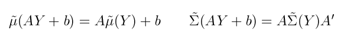
Affine equivariance is a natural property in those situations where it is desirable that the reuslts remain essentially unchanged under any nonsingular linear transformations, like linear discriminant analysis, canonical correlations and factor analysis.
The multivariate M-estimate
In the regression case it was possible to define separately robust equivariant estimate of location and of dispersion. This is more complicated to do in the multivariate case, and if we require equivariant estimates it is better to estimate location and dispersion simultaneously.
The multivariate M-estimate of location and dispersion are defined as the solution of the following system of equations (estimating equations)
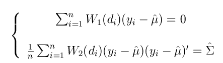
where the functions W1 and W2 need not to be equal.
Remark 1: If function W2 is non decreasing, the solution to this system of equation is called monotone multivaritate M estimates, while if W2 is redescending the solutions are called redescending multivariate M-estimates and must be defined by the minimization of some objective function as it happens in the case of S estimates (which are introduced in the next section).
Remark 2: it is possible to show that the multivariate M estimates are affine equivariant and asymptotically have a multivariate normal distribution.
The multivariate S-estimates and the MVE estimate
Just as with the regression estimates where we aimed at making the residuals "small", we shall define multivaraite estimates of location and dispersion that make the distances di small. To this purpose we look for and 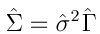 minimizing some measures of "largeness" of . From the expression
of the Mahalanobis distance it is clear that the minimum can be trivially attained
by letting the smallest eigenvalue of
tend to
zero. To prevent this, it is customary to impose the constraint
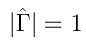. If we call with
Sv the set of symmetric positive definite v x v shape matrices.
For a dataset Y call 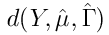the
vector with elements 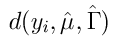with
i=1, 2, ..., n and let
. From the expression
of the Mahalanobis distance it is clear that the minimum can be trivially attained
by letting the smallest eigenvalue of
tend to
zero. To prevent this, it is customary to impose the constraint
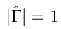. If we call with
Sv the set of symmetric positive definite v x v shape matrices.
For a dataset Y call 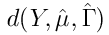the
vector with elements 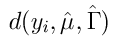with
i=1, 2, ..., n and let  be
a robust scale estimate.
be
a robust scale estimate.
Then we define the estimates and by
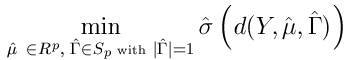
If we take for an M scale estimate that
satisfies
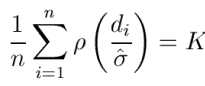
where ρ is a smooth bounded ρ-function, we obtain the class of S estimates. If ρ is differentiable, it is easy to show that to solve the minimization problem the solution must satisfy the so called M estimating equations. So an S estimate 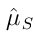and 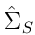 is also an M estimate.
In other words, for any 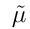, 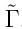 with 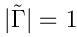, and 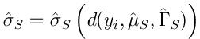the S estimates and satisfy the following inequality
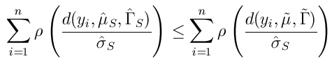
where 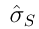 is the same in the denominator on both sides of the equation.
The S estimate of location 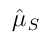, scale 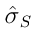 and shape 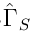 and consequently the S estimate of the covariance matrix 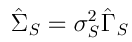can be found using routine Smult.
If, we take for (to mimic the approach
that results in the LMS in regression) the sample median of the Mahalanobis
distances, the resulting location and dispersion matrix estimate is called minimum
volume ellipsoid (MVE) estimate. The name comes from the fact that among all
ellipsoids {x: d(x,µ, Ʃ)} containing at least half of the data points, the one
given by the MVE estimate has minimum volume (i.e. minimum |Ʃ|).
The MVE estimate of location 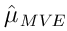 and of the covariance matrix 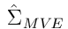can be found using routine mve.
The multivariate L-estimates of scale the MCD estimate
An alternative to using an M-scale or the median of the distances, we can
use a trimmed scale for (as it was done
in regression to define the LTS estimate). More formally, let
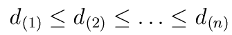
be the ordered values of the squared distances di=d(xi, µ, Γ), and for 1 <h<n define the trimmed scale of the squared distances as:
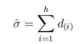
An estimate , based on this trimmed scale is called a minimum covariance determinant (MCD) estimate. The reason for this name is the following: for each ellipsoid {x: d(x, t, V)} we can compute the covariance matrix C of the data points in the ellipsoid. If , is an MCD estimate, the ellipsoid with t=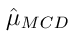 and V equal to a scalar multiple of 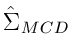 minimizes |C|.
The MCD estimate of location and of the covariance matrix can be found using routine mcd. For each elemental subset which is extracted (which satisfies certain conditions) we compute the minimum value of the determinant checking for singularity. For the subsets with the 5 best (bestr) minimum values of the determinant a series of refining steps (C-steps) are done.
The multivariate MM-estimate
The MM-regression estimator of location and shape is defined as the minimum of the following f function
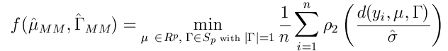
where ρ2 is possibly another ρ function which provides higher
efficiency than the previous ρ at the null multivariate normal model. Function
f is minimized with respect to µ and Ʃ for fixed
 . In this equation
is any auxiliary robust scale estimate,
however it is common to use
. In this equation
is any auxiliary robust scale estimate,
however it is common to use
 and, as starting values
of location and shape, those which come out from the S estimator (that is
and ) .
and, as starting values
of location and shape, those which come out from the S estimator (that is
and ) .